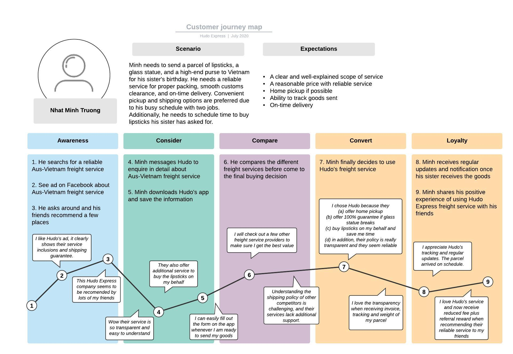

Develop User Story Writing and Customer Journey Mapping
Hudo Express, my international freight business, was born out of my realization of the strong demand for freight services between Australia and Vietnam during the Covid lockdown. As an entrepreneur, I embarked on a journey to create a freight service that goes beyond traditional offerings and provides a seamless end-to-end experience for our customers. To achieve this, I leveraged market research, user story writing, and customer journey mapping to refine Hudo Express and elevate the customer experience at every touchpoint once they select Hudo Express as their trusted freight service agent.
To kickstart the development of Hudo Express, I conducted market research to gain insights into the needs and preferences of our target customers. Through surveys, interviews, and data analysis, I identified key pain points in the freight industry, such as unreliable delivery times, lack of transparency, and poor customer service. Armed with these insights, I set out to build a business that would address these challenges and provide a superior freight experience.
User story writing became a pivotal tool in understanding the specific requirements of our customers. By creating detailed narratives that capture their expectations when choosing a freight service agent, I gained a deeper understanding of their needs at each stage of the freight process. From my personal experience of using an international freight service before, it is very noticeable that an international delivery can take up to 7-14 business days, and many service agents rarely provide any update to their customers. In addition, the service agent only stops their offering at the freight delivery, without any add-ons services to accommodate customers’ needs.
This enabled me to tailor our services, from pickup to delivery, to gift wrapping or becoming a buying agent for customers to meet their unique requirements. For example, I crafted user stories that highlighted the importance of being able to liaise with Australian sellers to work out a specific commercial order for a Vietnamese buyer, who then uses our on-time delivery, real-time tracking, and proactive communication to ship their goods from Australia to Vietnam. Our services are then crafted and developed to be aligned with this level of customer expectations.
I also developed Customer journey mapping which allowed me to visualize the entire freight experience from the customer's perspective. By mapping out each step, touchpoint, and interaction, I identified pain points and opportunities for improvement in the international freight industry. For instance, I discovered that customers often faced challenges during the customs clearance process in Vietnam. To address this, I redesigned our documentation requirements and introduced a dedicated customer support team to assist customers throughout this process. This streamlined the experience and reduced delays, resulting in increased customer satisfaction.
The process of user story writing and customer journey mapping was an ongoing effort, continuously evolving to meet changing customer needs and market dynamics. I regularly gathered feedback from customers, analyzed trends, and incorporated new insights into our service offerings. This iterative approach allowed us to stay ahead of the competition and deliver an exceptional freight experience that surpassed customer expectations.
The implementation of user story writing and customer journey mapping proved instrumental in the success and growth of Hudo Express. By addressing pain points and meeting customer expectations, we established a strong reputation for reliability, transparency, and exceptional service. This resulted in a significant increase in customer referrals, contributing to a remarkable 136% increase in revenue for the FY21-22 compared to the previous financial year. Our market research and customer-centric approach also allowed us to expand into this service sector where I can service higher-end clients, diversifying our business and achieving a turnover close to $400,000 for the same period.
I am always proud to say that Hudo Express revolutionized the international freight service competition between Australia and Vietnam, setting a new standard for customer-centric service. By leveraging market research, we gained deep insights into customer needs, allowing us to tailor our services to meet their expectations. Hudo Express success serves as a testament to the power of understanding customer journeys and leveraging that knowledge to create exceptional experiences.